spring作为一个轻量级的容器（docker），在JavaEE开发中得到了广泛的应用，当下流行的SSM、SSH框架体系都融入了spring，但是Spring的配置繁琐臃肿，特别是整合第三方框架的时候，都需要开发者自己编写各种配置文件，为了使开发者能够快速上手Spring系列框架的使用，SpringBoot应运而生。
springboot可以快速创建基于Spring的App应用程序，并且可以完全自动化解决各种配置和依赖关系，减少了开发者手动编写配置文件的繁琐步骤。主要优点：
1、打开IDEA，创建Maven项目，注意不勾选create from archetype，直接Next：
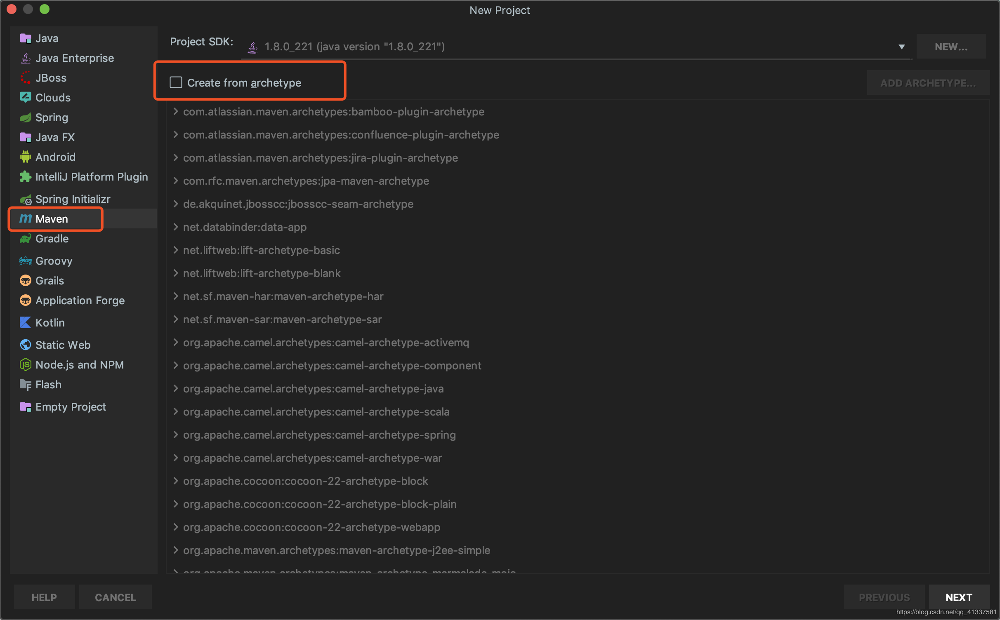
2、输入组织名称、模块名称、项目版本号等信息：
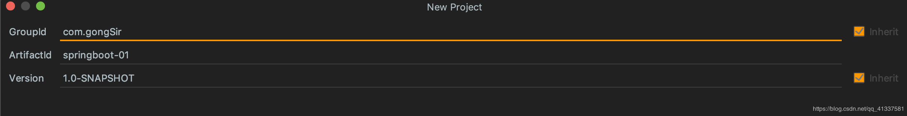
3、选择项目存储位置，然后点击Finish，完成Maven项目创建：
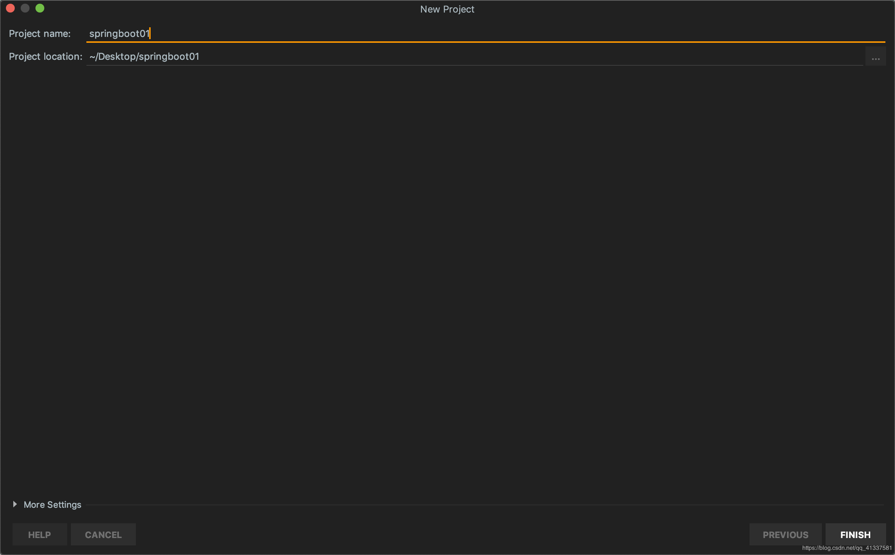
1、添加依赖
首先在pom.xml中添加spring-boot-starter-parent，代码：
<parent>
<artifactId>spring-boot-starter-parent</artifactId>
<groupId>org.springframework.boot</groupId>
<version>2.1.8.RELEASE</version>
</parent>注意选择enable auto-import...自动加载包和依赖！
spring-boot-starter-parent是一个项目构建的特殊的start，里面包含了一些Maven的基本配置，同时还提供了自动解决各组件的依赖和版本号。SpringBoot中提供了很多基本的Starter，例如做web开发的spring-boot-starter-web,所以接下来我们引入web依赖：
<dependencies>
<dependency>
<groupId>org.springframework.boot</groupId>
<artifactId>spring-boot-starter-web</artifactId>
</dependency>
</dependencies>2、编写接口和SpringBoot的启动类
在src/main/java目录下创建包，eg：com.gongSir.controller，在controller下新建HelloController.java接口类：
@RestController
public class HelloController {
@GetMapping(path = "/hello")
public String hello(){
return "hello spring boot!";
}
}在com.gongSir下创建SpringBoot启动类App.java：
//开启自动化配置
@EnableAutoConfiguration
//开启包扫描，将controller注册到spring中
@ComponentScan
public class App {
public static void main(String[] args) {
SpringApplication.run(App.class);
}
}以上的两个注解（@EnableAutoConfiguration、@ComponentScan）也可以直接用组合注解@SpringBootApplication代替：
@SpringBootApplication
public class App {
public static void main(String[] args) {
SpringApplication.run(App.class);
}
}1、直接运行App的main方法：
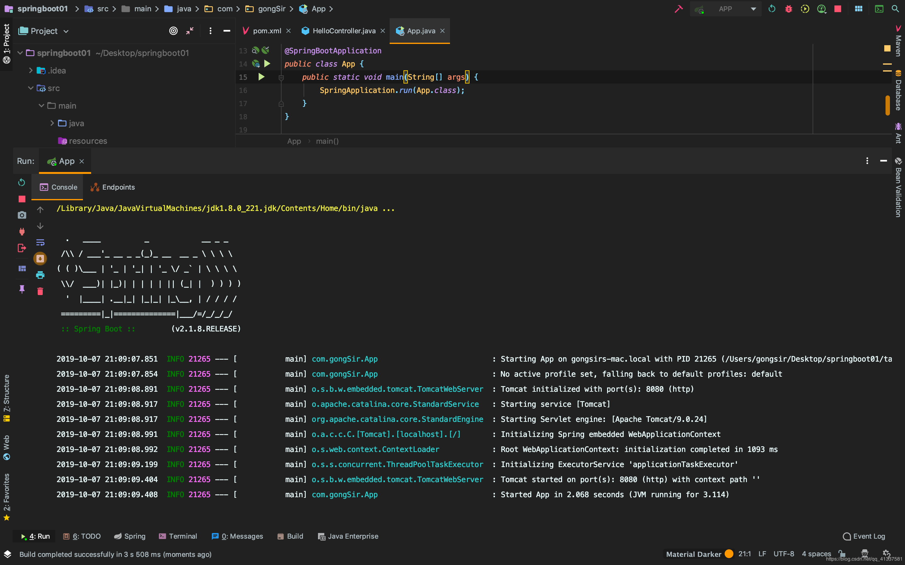
浏览器输入：http://localhost:8080/hello
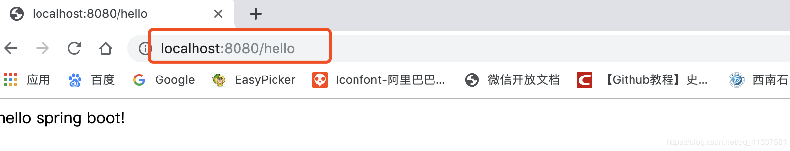
2、打包启动
SpringBoot项目可以直接打包成jar包，因它内嵌了服务器，可以直接在服务器上通过java -jar jar-name运行。要将springboot打成jar包，需要添加一个依赖：
<build>
<plugins>
<plugin>
<groupId>org.springframework.boot</groupId>
<artifactId>spring-boot-maven-plugin</artifactId>
<version>2.1.8.RELEASE</version>
</plugin>
</plugins>
</build>双击package命令即可在target目录下生成一个jar文件：
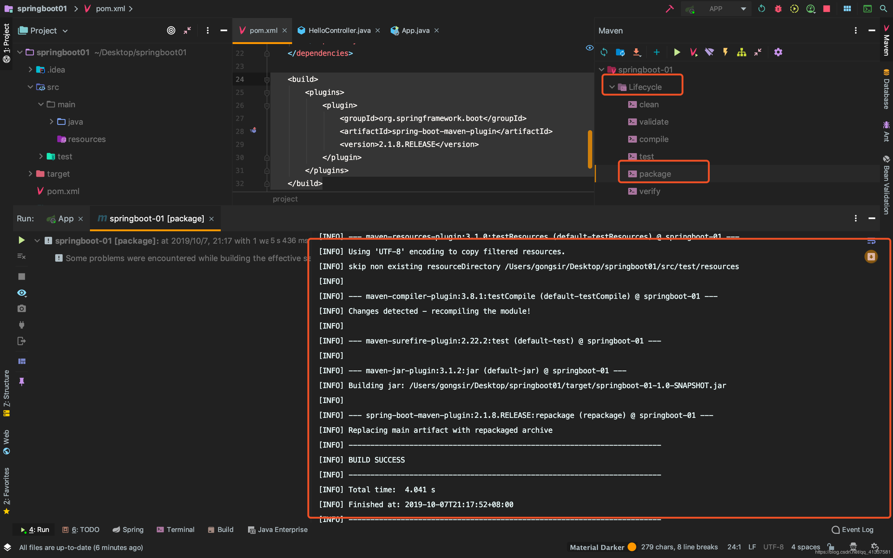
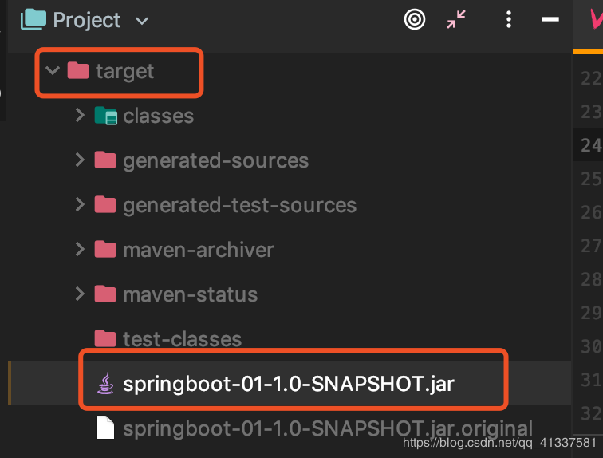
在服务器上配置java环境，然后通过java -jar springboot-01-1.0-SNAPSHOT.jar运行项目：
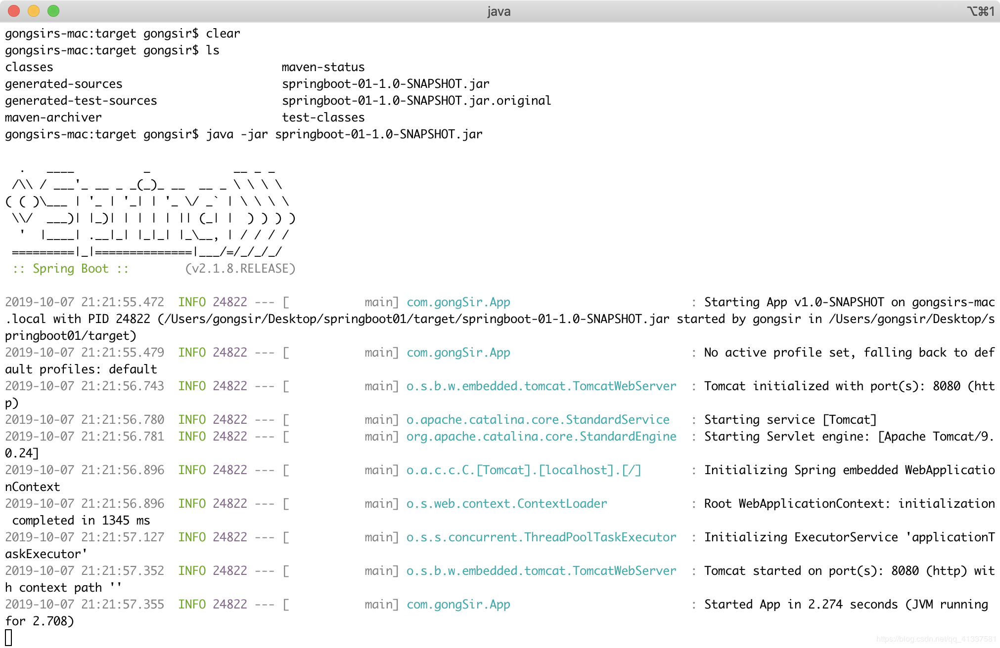
浏览器访问：
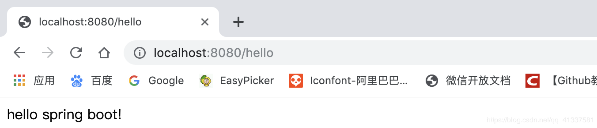
至此，一个简单的Spring Boot项目已经构建好并成功启动。
以上是基于Maven构建的SpringBoot项目，步骤稍微有点复杂，其实我们可以使用IDEA和官方的工具更加快速地创建SpringBoot项目。
1、进入官网：https://start.spring.io/，填写项目基本信息，添加需要的依赖，之后点击Generate：
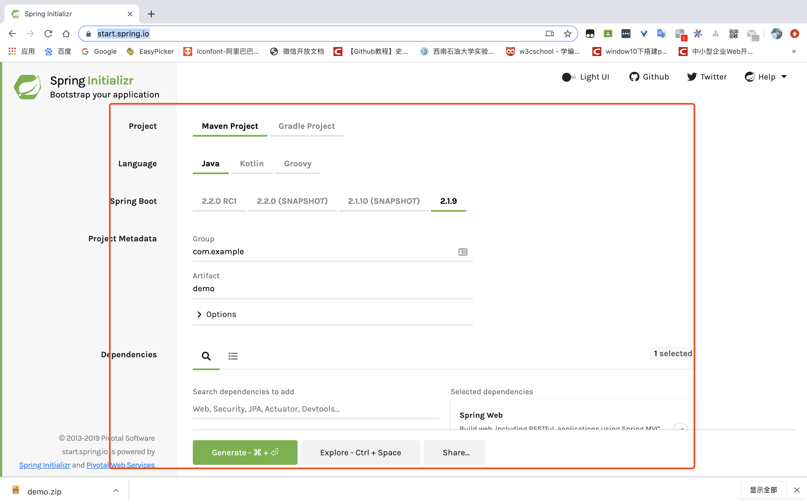
2、解压后直接用idea打开（open）：
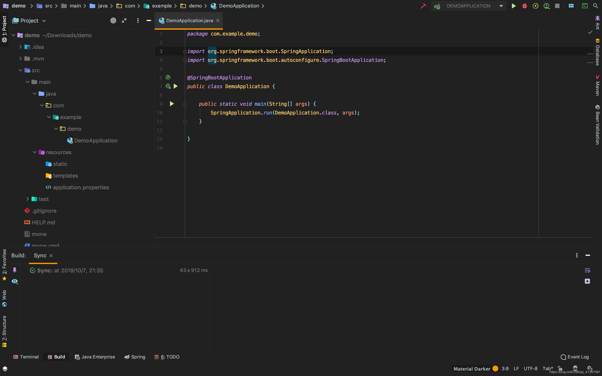
1、创建时选择Spring Initializr，如图：
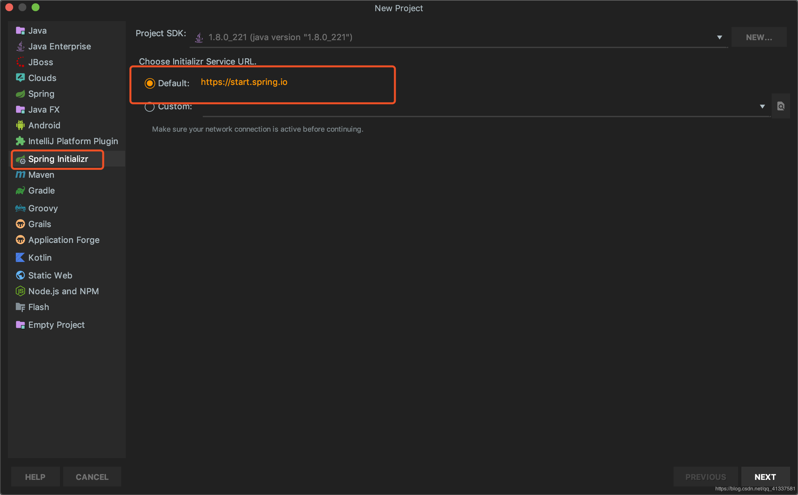
2、填写项目基本信息：
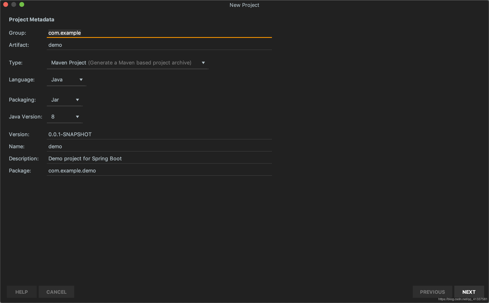
3、选择所需的项目依赖，IDEA会自动添加依赖到pom.xml中：
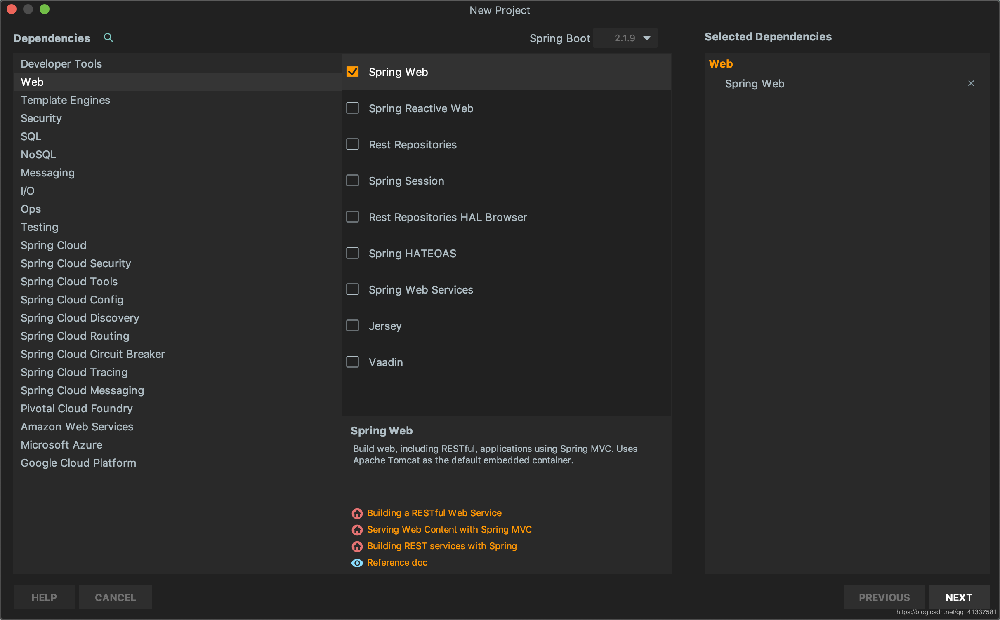
4、选择项目路径，Finish：
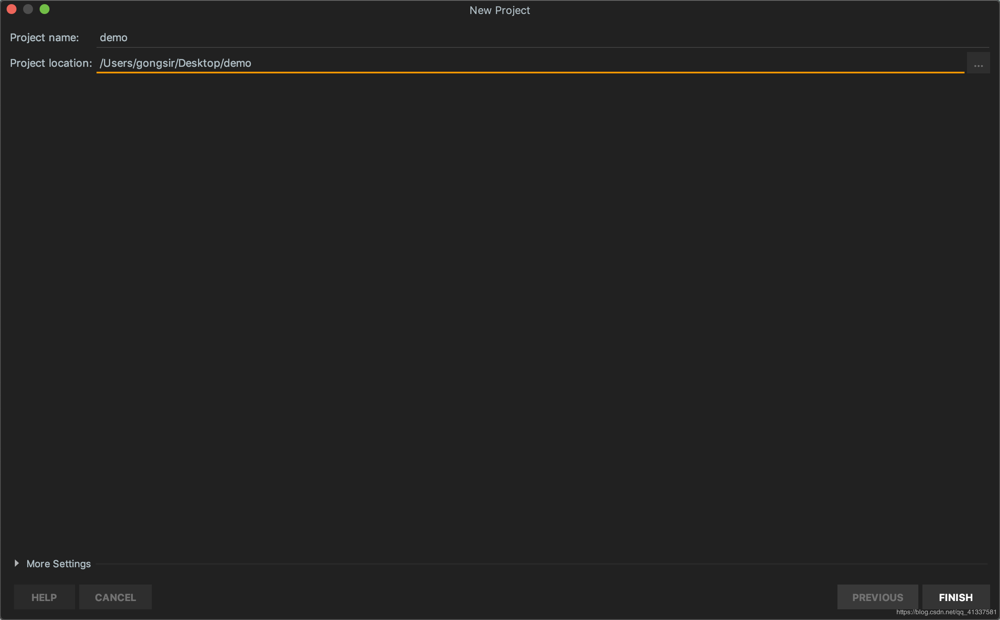
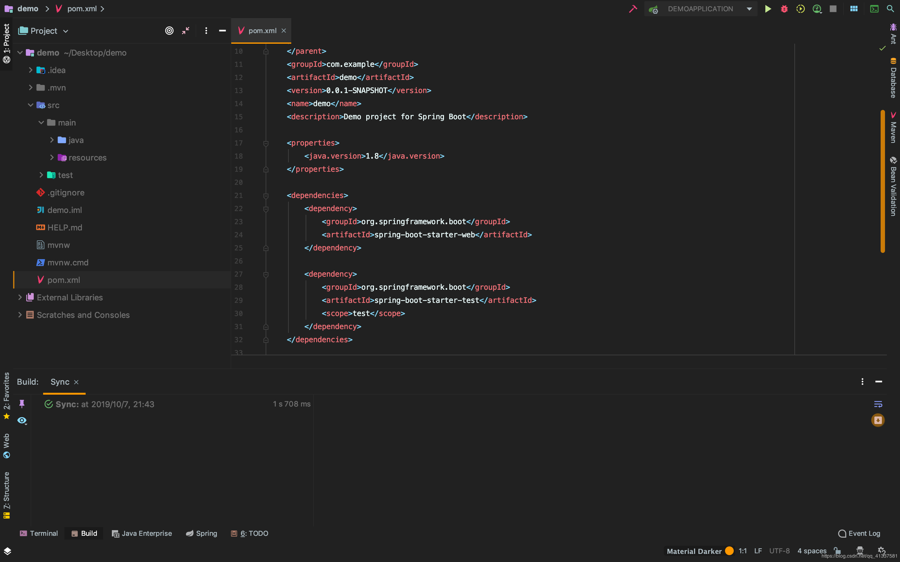
本文主要对SpringBoot做了简单介绍，并且使用Maven构建了一个入门demo，最后介绍了如何快速创建SpringBoot应用，后续将继续更新SB的相关新知识。待续......